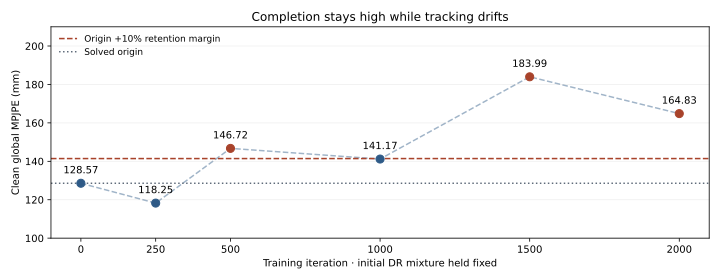
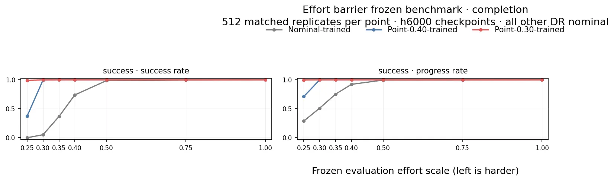
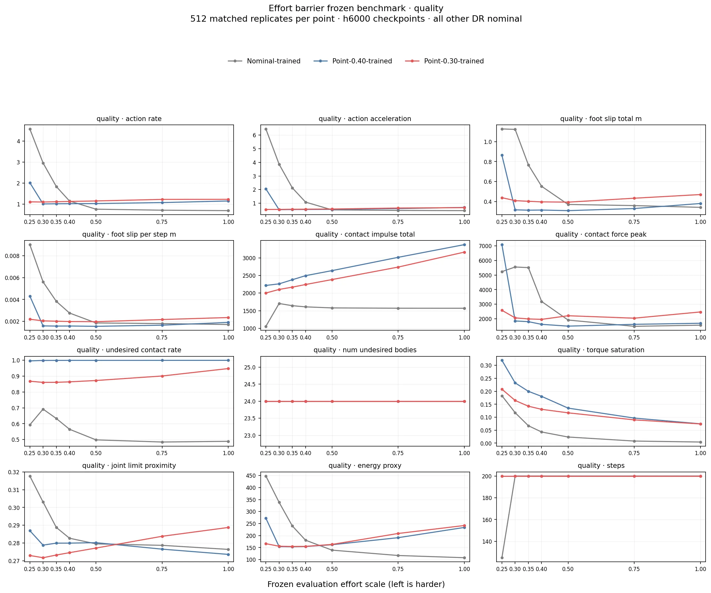
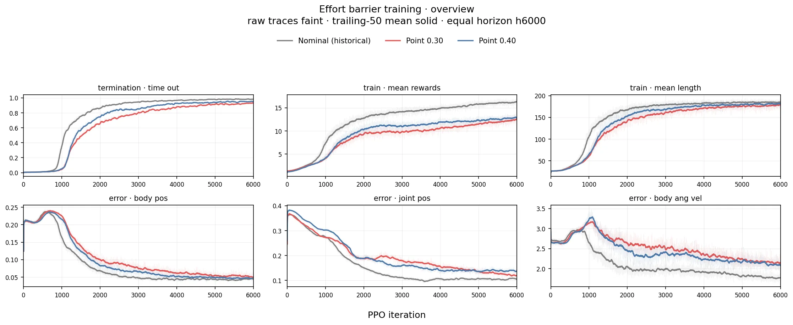
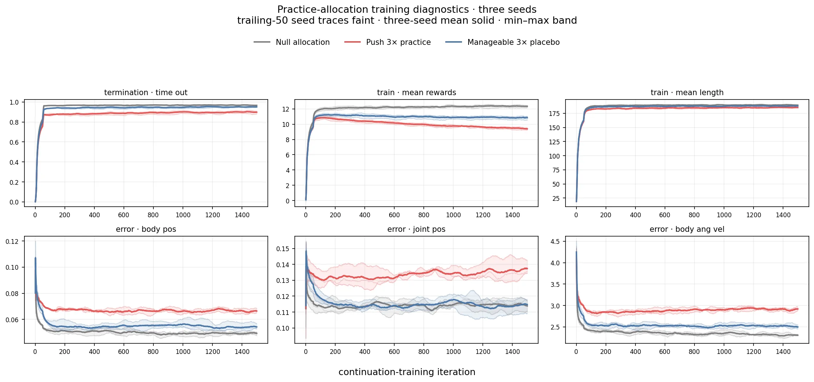
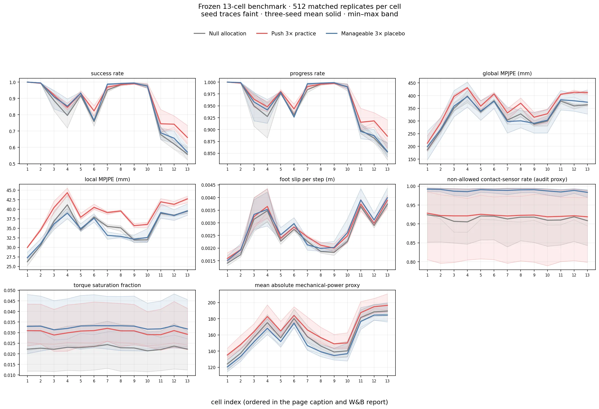

LUCID · feedback-driven domain randomization for humanoid motion tracking · Unitree G1 · SONIC / Isaac Lab · updated 2026-09-06 UTC
Hard-push practice improves humanoid survival, but the policy can keep completing a motion while its tracking deteriorates. Our latest experiments test that tradeoff directly. The research now focuses on retaining the starting policy’s quality, measuring uncertainty at the learning frontier, and finding feedback that can guide harder practice reliably.
Latest research · completed diagnostics + active control
The three-seed practice confirmation established a useful practice effect: +12.11 ± 3.81 percentage points of held-out Push 3.5× completion (mean ± sample SD). It also exposed increased nominal pose error and energy. Selecting Push over the equal-density placebo gained only +3.08 points on the two confirmation seeds, below the preregistered +5 gate. That result does not authorize a utility selector.
The follow-up compares a static mixture, a frozen replay schedule, and an adaptive frontier gate. All three retain nearly perfect clean completion, yet all lose substantial global tracking quality relative to the solved origin. A separate diagnostic then holds the initial DR mixture fixed: tracking still deteriorates. Expansion is therefore not necessary for the observed loss. The optimizer-history control below tests one possible contributor.
One development seed (8600), one motion, 2,000 training iterations per arm, and 512 evaluation aliases per cell. The held-out macro averages quality-qualified success on Push 3.5× and Push 3.5× + Friction 1.5×.
| Arm | Clean completion | Clean qualified | Clean global MPJPE | Held-out qualified macro |
|---|---|---|---|---|
| Solved origin | 100.00% | 100.00% | 128.57 mm | not measured |
| Static mixture | 99.80% | 98.05% | 357.97 mm | 39.16% |
| Frozen replay | 100.00% | 98.44% | 373.92 mm | 37.01% |
| Adaptive gate | 100.00% | 99.22% | 324.50 mm | 40.33% |
The gate’s descriptive held-out differences are +1.17 points versus static and +3.32 versus replay. Its clean global error is nevertheless 152.4% above the origin. Comparing only the trained arms would miss this shared degradation. The origin audit supplements the original endpoint readout; it does not rewrite its primary comparison. The static arm can also sample combinations of marginal extremes absent from replay, so this is not an exact joint-exposure match.
Quality-qualified success requires completion plus episode-mean global MPJPE ≤600 mm and local MPJPE ≤50 mm, measured before the environment step over the first episode. These are loose engineering screens, not hardware safety criteria. Retention separately permits at most a 2-point loss in clean completion and a 10% increase in clean global or local pose error against the reference policy.
The tables and trajectory use the archived legacy MPJPE aggregation. The geometric diagnostic below uses first-episode masked means; these aggregations are not interchangeable. Clean means no randomized physics (phys_000); push cells retain the other baseline DR channels. Evaluation aliases are not independent motions or training seeds.
This 12-cell diagnostic holds the frontier pilot’s initial cohort distribution fixed for 2,000 iterations. It does not recreate the origin’s original training distribution. Clean global error first exceeds the +10% margin at the observed 500-iteration checkpoint, returns just inside at 1,000, and exceeds it again later. The trajectory is nonmonotone.

Dated snapshot: . The fresh-optimizer arm is at 460 / 2,000 iterations; the restored-history arm is queued. Both origin evaluations are complete. The supervisor reports no warnings. This is a static publication snapshot, not a live feed.
All 10 smoke-test cells completed. The longer campaign contains 22 cells: two origin evaluations, two 2,000-iteration training arms, and nine checkpoint/endpoint evaluations per arm. The existing supervisor checks status every 60 seconds, stops on failure without automatic retry, and runs analysis after all cells complete.
The pair starts with identical policy and value weights, learning rate, seed, and fixed DR mixture. Only Adam history is fresh versus restored from the origin checkpoint. All 55 policy tensors and 17 value tensors match exactly before training; 69 optimizer states are restored. The frozen runtime passed 1,940 CPU tests.
The 16-iteration smoke is an integration result, not evidence of benefit: clean global error was 124.61 mm fresh versus 140.76 mm restored. Restoration was worse on this short diagnostic. The full comparison remains pending. Historical optimizer names were reconstructed and checked against the pinned parameter order; scheduler and environment state are not restored. This tests optimizer history under a specified continuation contract, not exact historical resumption.
Uncertainty with an explicit unresolved state. At iteration 1,000, the full clean panel is only +9.80% above the origin. Across repeated 256-alias subsets, the 5th–95th percentile range is +6.79% to +13.08%, crossing the 10% retention limit. A small probe should not force a binary expand/hold decision when it cannot resolve the margin.
These are 1,000 resamples of an existing finite panel, not confidence intervals, new-seed detection rates, or a tested online probing budget. Prospective calibration and measured probe cost come next.
Probe-budget analysisSeparate translation, heading, and pose. Existing global and root-relative errors imply a mean pelvis-translation bound of 99.74–156.12 mm at the origin and 288.28–357.49 mm for the gate endpoint. Those intervals force a translation increase of at least 132.16 mm. For the fixed-mixture endpoint, the change interval still crosses zero.
These are geometric bounds, not confidence intervals or causal attribution to a DR channel. Direct translation, heading, root-relative pose, and recovery-time measurements would make the next feedback diagnosis more specific.
Translation-bound analysisDownload the numerical summaries and source hashes (JSON) · Pilot results · Full research plan
The problem
Domain randomization trains a policy on ranges of mass, friction, center of mass, joint offsets, actuator delay, and pushes, so that the real robot lands inside the training distribution. The width of the ranges is a genuine tension: too wide and learning stalls, too narrow and the policy is brittle. Adaptive curricula resolve it by moving the ranges during training, usually driven by some score measured on the current training batch.
The catch is that the score is measured on a distribution the curriculum controls. If the score falls and the curriculum is allowed to make training easier, the score recovers with no change to the policy. Repeat, and the training ranges drift away from deployment while every monitor improves. We call the end state training-range collapse.
Return went up in exactly the runs that had stopped training on the physics that mattered.
Our testbed is SONIC whole-body motion tracking on a 29-DoF Unitree G1 in Isaac Lab: 1,024 environments, 8,000 PPO iterations from scratch, one training clip, six randomized channels scaled by one number λ where λ = 1 is the training envelope. Every policy is scored afterwards on a frozen physics ladder (λ from 0 to 2, 512 episodes per cell) that no curriculum ever sees.
What we found
Six 8,000-iteration runs of a feedback curriculum driven by a learned mismatch signal all applied at least one range reduction. Two ended near λ = 0. Those two had the highest terminal returns of all twelve runs we scored and among the lowest robustness on the frozen ladder.
| Outcome | Collapsed run A | Collapsed run B | Runs that held their ranges |
|---|---|---|---|
| Final range scale λ | 0.062 | 0.012 | 1.000 |
| Mean return, last 500 iterations | 15.29 | 14.40 | 10.98 – 12.28 |
| Frontier success AUC (points) | 73.99 | 69.73 | 61.20 – 91.31 |
Keep the same controller, refuse every requested decrease. Across three seeds the rule blocked 453, 951, and 629 reductions and applied none. Under a comparison rule frozen before the data existed, the resulting policies are within margin of fixed domain randomization on all four outcome components and all three seeds. They are not better. Three seeds do not establish equivalence either: the one-sided 95% lower bound on the difference is −3.19 points, outside the 2-point margin. The rule passing is a decision, not a demonstration that the two are equally robust.
| Seed | Never-shrink AUC | Fixed DR AUC | Difference |
|---|---|---|---|
| 8600 | 90.30 | 90.46 | −0.16 |
| 8601 | 91.31 | 88.18 | +3.13 |
| 8602 | 82.03 | 83.20 | −1.17 |
| Mean | +0.60 (SD 2.25) |
At fixed difficulty, a usable readiness signal must move with competence. Time-out survival does (rank correlation +0.99 with training progress). The learned mismatch signal that drove the collapsing curriculum does not (−0.04, nineteen direction reversals), and its direction was set by the arm rather than the policy. No tuning of the controller could have saved it. Survival is usable, but only if measured on the proposed harder conditions rather than the current ones, and only if a failed test can hold but never shrink the ranges.
Widening one channel at a time on frozen policies (512 episodes per cell) shows that pushes are the binding channel for every randomized policy, while mass, center of mass, and joint offsets can be tripled at under 1.4 points of cost. The unrandomized policy fails first under center-of-mass shift instead. Widening everything together costs about six points more than the sum of the parts. Both facts argue for expanding channels separately and testing corners.
| Policy | All 2× | Mass 3× | CoM 3× | Joint 3× | Push 2× / 3× | First to fail |
|---|---|---|---|---|---|---|
| Fixed DR | 0.820 | 0.949 | 0.988 | 0.990 | 0.912 / 0.746 | push |
| Never-shrink | 0.842 | 0.938 | 0.982 | 0.986 | 0.928 / 0.770 | push |
| Adaptive, collapsed | 0.518 | 0.682 | 0.818 | 0.955 | 0.811 / 0.570 | push |
| No randomization | 0.334 | 0.643 | 0.393 | 0.891 | 0.736 / 0.443 | center of mass |
Watch it happen
We exported the final Isaac Lab policies to ONNX and replayed them in MuJoCo with an independent implementation of the six randomized channels, scaled by the same λ. Every grid below shows all eight physics draws for a policy; a tile is marked green PASS if the robot tracks the clip to the end, or red FELL at t s the moment the pelvis leaves 0.5 m of the reference, and then freezes on the fall so it stays on screen. Headers carry the MuJoCo pass rate over those eight draws and the Isaac Lab 512-episode score for the same checkpoint. The two simulators randomize differently and are never pooled.
| Policy | All channels · λ 1 / 1.5 / 2 | Physics only · λ 1 / 1.5 / 2 |
|---|---|---|
| No randomization | 31 / 12 / 0 % | 59 / 16 / 3 % |
| Adaptive, collapsed (seed 8601) | 56 / 19 / 9 % | 84 / 31 / 16 % |
| Never-shrink (seed 8601) | 47 / 22 / 16 % | 66 / 50 / 38 % |
| Fixed DR (seed 8601, paired) | 47 / 25 / 12 % | 75 / 47 / 38 % |
| Fixed DR (seed 8600) | 78 / 34 / 16 % | 94 / 56 / 31 % |
MuJoCo survival over 32 shared physics draws per cell. Per-difficulty cuts: λ 0 · λ 1 · λ 1.5 · physics-only λ 1.5 · λ 2 · 3 × 4 explainer grid.
How the curriculum works
A PI controller read a learned mismatch statistic on the current training batch and moved the single scale λ up or down toward a set point. When learning stalled, lowering λ restored the statistic faster than learning could, so the controller lowered it, and lowered it again.
Same controller, same signal, one projection: a requested decrease is refused and logged. The range may expand or hold. Across three seeds this alone recovered the robustness of fixed randomization.
A scalar version of the probe gate, trained from scratch, expanded λ from 1.0 to 1.5 in four evidence-triggered steps at iterations 3,362, 4,103, 4,790, and 5,891 with no decrease. It also exposed a defect: a stale global return guard froze expansion 914 times after the ceiling. The final design uses probe-relative evidence.
Latest experiment · 2026-09-04 training + frozen benchmark published
The actuator study asks a narrower question than the broad domain-randomization work above. We multiply all 29 joint effort limits by one common scale s, leaving every other event and actuator randomization channel at nominal and latency at zero. A low s removes the near-nominal samples that make ordinary fixed randomization an implicit curriculum. The scientific question is not merely whether a nominal policy fails there; it is whether a policy trained from scratch at that exact plant also fails while a policy staged into the same endpoint succeeds.
Frozen-policy failure locates a stress point. Only matched direct failure plus staged success can identify a curriculum barrier.
| Parameter or arm | Values | Held fixed | Question isolated |
|---|---|---|---|
| Frozen common-point ladder | s = 1.00, 0.75, 0.50, 0.40, 0.35, 0.30, 0.25 | Checkpoint, motion, evaluation seed; all other DR nominal | Where torque capacity becomes consequential for an already-trained policy |
| Arm A · direct point | One s for every joint throughout training | From-scratch initialization, seed, 1,024 environments, PPO budget, reward, motion | Whether random exploration can learn directly at the endpoint |
| Arm C · open-loop ramp | s: 1.00 → target, then held at target | Same endpoint and training contract as Arm A | Whether staged access to the endpoint crosses a barrier that direct training cannot |
| Arm B · mean-matched range | At target 0.30: independent per-joint draws from U[0.25, 0.35] | Mean effort scale 0.30 and the same training budget | Whether distribution shape and jointwise compensation—not curriculum—change learnability |
At equal horizon 6,000 and seed 8600, we froze the nominal-trained, point-0.40-trained, and point-0.30-trained checkpoints. Each cell below contains 512 fresh physics/noise replicates of the same hands-on-back walking clip. The checkpoint, motion panel, evaluation seed, and every non-effort DR channel are matched; only the shared all-joint effort scale changes. The 512 replicates tighten each checkpoint estimate—they are not independent motions or training seeds.
Open the W&B frozen-policy benchmark: all 64 outcome and quality curves →
Runs: nominal-trained · point-0.40-trained · point-0.30-trained. Every run has seven rows and uses effort scale as its W&B step axis.
| Effort scale s | Nominal-trained | 0.40-trained | 0.30-trained |
|---|---|---|---|
| 1.00 | 512/512 | 512/512 | 512/512 |
| 0.75 | 511/512 | 512/512 | 512/512 |
| 0.50 | 506/512 | 512/512 | 512/512 |
| 0.40 | 379/512 | 512/512 | 512/512 |
| 0.35 | 187/512 | 512/512 | 512/512 |
| 0.30 | 27/512 | 511/512 | 512/512 |
| 0.25 | 0/512 | 192/512 | 508/512 |

| All-episode metric at s = 0.30 | Nominal-trained | 0.40-trained | 0.30-trained |
|---|---|---|---|
| Completion | 27/512 | 511/512 | 512/512 |
| Mean progress | 51.20% | 99.996% | 100.00% |
| Global / local MPJPE | 233.9 / 65.2 mm | 182.9 / 33.4 mm | 132.1 / 28.8 mm |
| Velocity / acceleration distance | 13.19 / 9.03 | 5.54 / 1.45 | 5.21 / 1.51 |
| Foot slip per step | 5.61 mm | 1.59 mm | 2.05 mm |
| Torque-saturation fraction | 11.75% | 23.25% | 16.47% |
| Energy proxy | 338.6 | 154.1 | 155.7 |
The point-0.30 policy improves all-episode global MPJPE at every tested effort point relative to point-0.40 training and improves local MPJPE through s = 0.50; its local error is slightly worse at 0.75 and 1.00. Both point-trained policies dramatically suppress the nominal policy's low-effort velocity and acceleration blow-up. But specialization has a cost: at nominal torque the point-0.30 policy's global MPJPE is 239.1 mm versus 91.4 mm for nominal training, local MPJPE is 37.2 versus 22.7 mm, and energy is 242.1 versus 107.9. Completion therefore cannot stand in for imitation quality.
The contact-quality signals are shown but remain diagnostic: the current evaluator aggregates contact activity over all steps rather than episode-masking it, and the high absolute undesired-contact rates for the point policies need a dedicated contact audit. Success-conditioned curves are also selection-biased where the nominal policy rarely completes. The all-episode pose, dynamics, and completion panels carry the primary comparison.
Full frozen panels: 15 all-episode pose curves · 10 all-episode dynamics curves · 12 quality curves · 25 success-conditioned curves.

This is the clean learning-curve comparison: both point arms start from scratch at seed 8600 with 1,024 environments, the same clip, PPO configuration, rewards, termination rules, zero latency, and every non-target DR channel at nominal. The learning parameter changes from the common all-joint effort point [0.40, 0.40] to [0.30, 0.30]. Timestamped paths and checkpoint-save bookkeeping differ but do not change the optimizer or environment. The nominal-effort curve reports the same contract and h6000 horizon, but comes from the earlier 2026-08-29 code snapshot; it is a scale benchmark, not the claim-bearing randomized third arm.
Open the W&B comparison report: all 55 logged scalars, 59 panels →
Individual provenance: Nominal historical benchmark · Point 0.40 · Point 0.30. All W&B traces are lossless normalized replays of durable SONIC scalar logs and stop at h6000.

| Training readout | Nominal historical | Point 0.40 | Point 0.30 | 0.30 − 0.40 |
|---|---|---|---|---|
time_out at iteration 1,500 | 0.7738 | 0.5997 | 0.5235 | −7.62 pts |
First single iteration with time_out ≥ 0.70 | 1,306 | 1,766 | 1,991 | +225 iter |
First trailing-50 mean with time_out ≥ 0.70 | 1,373 | 1,837 | 2,221 | +384 iter |
time_out, trailing 50 at h6000 | 0.983008 | 0.952524 | 0.930768 | −2.18 pts |
| Mean reward, trailing 50 at h6000 | 16.3419 | 12.8946 | 12.5074 | −0.3873 |
| Mean episode length, trailing 50 at h6000 | 185.5242 | 181.4704 | 179.1866 | −2.2838 |
For this seed and clip in closed-loop simulation, the 0.30 change is measurably harder, not qualitatively unlearnable. Its mean completion over iterations 1–6,000 is 0.6441 versus 0.6903 at point 0.40, and reaching a sustained 0.90 takes 1,101 additional iterations (4,574 versus 3,473). At h6000 its completion gap has narrowed to 2.18 points. Its trailing-50 joint-position error is actually lower by 0.0187, while body position, anchor pose/velocity, and body angular-velocity errors are worse; no single training aggregate supports “same tracking quality.” The extra termination mass is concentrated in foot-position failures (+1.40 points) and anchor-orientation failures (+0.79 points).
Full local panels: 12 reward terms · 10 tracking errors · 5 termination causes · 16 sampler diagnostics · 10 optimization and throughput metrics.
| Stage | Predeclared observation | Decision |
|---|---|---|
| 1 · Feasibility screen | An adapted frozen policy succeeds at the target while the nominal policy largely fails | The point is severe and has an empirical solution; it is eligible for a training-barrier test |
| 2 · Direct-learning tripwire | At iteration 1,500, Arm A has time_out < 0.30, 0.30–0.70, or ≥ 0.70 | Candidate C1; gray zone continues unchanged to iteration 2,000; or direct takeoff |
| 3 · Matched endpoint contrast | If C1 fires at the tripwire, launch the open-loop ramp to the identical target and hold it there; keep Arm A running | Compare Arm A and Arm C at equal seed, compute, motion, endpoint, and frozen evaluation cells |
| 4 · Confirmation | Repeat the surviving contrast on seeds 8600, 8601, and 8602; report spread at the checkpoint-seed level | Separate a repeatable curriculum effect from seed variance |
| Direct Arm A | Ramp Arm C | What we may conclude |
|---|---|---|
| Succeeds | Either outcome | Directly learnable. No curriculum barrier at the tested budget. |
| Fails | Succeeds | Barrier candidate at one seed. The curriculum claim waits for paired multi-seed confirmation. |
| Fails | Fails | Unresolved. The tested curriculum did not cross the condition; this does not by itself prove physical infeasibility. |
| Fails | Mean-matched Arm B succeeds | Sampling-shape effect. Jointwise variation enables compensation, but it is not evidence for a staged curriculum. |
time_out = 0.5235 versus the barrier threshold below 0.30), first crossed 0.70 at iteration 1,991, and reached a sustained trailing-50 crossing at 2,221. Training then completed cleanly through iteration 8,000; the matched h6000 checkpoint used above was never modified by evaluation. Its 512/512 result at 0.30 and 508/512 at 0.25 leave no evidence-bounded reason to spend GPU time on an effort recovery ramp. The next claim-bearing work returns to the measured, practice-responsive push frontier.Practice-allocation confirmation · 2026-09-05
We reallocated 25% of the same 1,024 environments for 1,500 continuation iterations: either ordinary λ=1 training, Push alone at 3×, or a difficulty-matched placebo on Mass + CoM + joint offset at 3×. Seed 8600 discovered the effect; two independently trained solved origins, seeds 8601 and 8602, graded the frozen confirmation. Every arm then faced the same 13 cells and 512 matched replicates per cell.
The practice-deficit gate passed. Push 3× practice improved Push 3× success by +3.91 and +6.64 points on the untouched confirmation seeds, giving a +5.27-point mean against the frozen +5 rule. The gain transferred above the practised dose: +12.11 ± 3.81 points at Push 3.5× and +10.16 ± 3.53 at Push 3.5× + Friction 1.5× across all three seeds.
| Frozen decision | Seed 8600 | Seed 8601 | Seed 8602 | Reading |
|---|---|---|---|---|
| Push 3× · Push minus Null | +9.18 | +3.91 | +6.64 | D1 confirmed; new-seed mean +5.27 |
| 13-cell macro · Push minus Placebo | −0.08 | +1.70 | +4.46 | D2 did not clear +5; no selector claim |
| Nominal success · Push minus Null | 0.00 | −0.39 | 0.00 | No >2-point completion loss |


Where we are
| Track | State | What it established |
|---|---|---|
| Collapse and return inversion measured | 12 arm–seed pairs scored on the frozen ladder | Two collapses; Spearman −0.73; cost 14.2 / 17.3 points on the same seed |
| Never-shrink rule, three seeds measured | Preregistered noninferiority passed | 0 of 2,033 reductions applied; +0.60 ± 2.25 points vs fixed DR; superiority not claimed |
| Readiness-signal audit measured | Five pinned-difficulty runs, two collapses | Survival anchored (+0.99); learned mismatch not (−0.04); foot slip the only body signal with a consistent difficulty response |
| Per-channel attribution measured | 55 cells, one seed | Push binds; mass / CoM / joint free to 3×; joint corner costs 6 points beyond the marginals |
| From-scratch probe gate measured | One seed, 8,000 iterations | Four expansions to 1.5, zero decreases; return-guard defect found |
| Warm-start expansion screen measured | 13 arms from a solved λ 1 policy, 2,000 iterations, one seed | The asymmetric feedback box and its matched open-loop ramp differed by −0.39 points on the primary aggregate. A scalar gate beat blind width by 9.38 points at the unsafe wide corner, supporting frontier protection but not adaptive-training superiority |
| MuJoCo sim-to-sim replay measured | 5 policies × 6 λ × 32 draws, two channel sets | Ordering transfers; push binds in both simulators; ratchet ≡ paired fixed |
| Held-out motion 1 of 3 clips | Nearby untrained clip, 128 episodes per cell | Ordering preserved (Spearman 0.8, 1.0); collapsed run 0.40 vs fixed 0.80 at λ 1.5 |
| Can a curriculum read learning progress? measured | Per-condition survival from the windows where the range never moved, against a time-shuffled null | From scratch the signal is clear. On a competent policy it sits at 0.01 to 0.08 of its own noise floor and no cohort meets the reliability criterion at any affordable window, so an online progress-driven allocator cannot be built on episode-end survival at this budget |
| Is a finer signal available? measured | Per-step foot slip against success, five policies, sixteen cells | Slip has the resolution where success saturates but ranks the three healthy policies backwards in all four tests. Low slip is a conservative gait, not a robust one. Demoted |
| Effort point 0.40 measured | From-scratch seed 8600; equal-step frozen ladder, 512 replicates per cell | Directly learnable, not a barrier. At point 0.40 the trained policy completes 512/512 versus 379/512 for nominal training; the adaptation effect is real but plant-specific |
| Effort point 0.30 closed | Direct from scratch through h8000, seed 8600, 1,024 environments; matched h6000 learning and seven-point frozen curves published | C1 rejected. At h6000 the trailing-50 training completion is 0.930768; frozen completion is 512/512 at point 0.30 and 508/512 at point 0.25. Directly learnable; no recovery ramp and no further effort-channel GPU allocation |
| Practice-allocation confirmation 3 seeds | 9 matched branches, 3 solved origins, 1,500 iterations; 25% of 1,024 environments reallocated, not added; 117 frozen arm–seed–cell evaluations | D1 confirmed: new-seed Push 3× gain +5.27 points and all-seed held-out Push 3.5× gain +12.11 ± 3.81. D2 did not pass: selecting Push beat the equal-density placebo by +3.08 points on the two confirmation seeds, below the +5 gate. Nominal completion was retained, but pose error and energy rose |
| Matched preset schedule vs adaptive gate screened | One development seed | No asymmetric feedback advantage at 2,000 iterations. Any follow-up must add confirmation seeds, longer frontier exposure, or a stricter exposure-matched comparator rather than repeat the same controller |
| Quality-frontier pilot complete | Three 2,000-iteration arms, one development seed; origin audit | Gate held-out qualified macro 40.33%, static 39.16%, replay 37.01%; all arms fail clean pose retention against the origin |
| Fixed initial-mixture diagnostic complete | 12 cells including the checkpoint trajectory | 100% clean endpoint completion with +28.2% global pose error; first observed +10% breach at iteration 500 |
| Optimizer-history control running at snapshot | 10 smoke cells complete; 22-cell long comparison under supervision | Exact initial policy/value parity verified. Short smoke favors fresh history on clean pose error; long endpoint conclusions pending |
| Probe uncertainty and translation offline analysis | Finite-panel subsampling and geometric bounds from archived episodes | Near-margin decisions remain unresolved with small probes; translation must increase in the replay and gate endpoints. Direct component telemetry is planned |
| Hardware not run | — | Nothing has run on the robot |
Research plan
The working hypothesis is that a useful curriculum expands a quality-constrained capability frontier: conditions the policy can track and recover from, with an explicit uncertainty estimate and a record of whether practice actually improves them. A frontier is specific to the policy, motion, training budget, and measurement contract. Failure under one budget does not identify a physical limit of the robot.
The completed pilot and fixed-mixture diagnostic make continuation quality the first question. The current optimizer control runs before another adaptive allocator. The full research programme and design contract retain the hypotheses, comparators, and decision gates.
| Stage | Experiment or implementation | Decision |
|---|---|---|
| Completed · practice confirmation | Three origins; matched Null, Push, and equal-density placebo branches | Push practice helps survival. Choosing Push does not clear the +5-point utility gate; quality must be a separate endpoint |
| Completed · quality-frontier pilot | Static mixture, frozen replay, and adaptive gate; one development seed | All three lose clean pose quality against the solved origin. The trained-arm comparison alone cannot establish retention |
| Completed · initial-mixture hold | 2,000 iterations at fixed initial DR support; clean checkpoint trajectory and frozen endpoint ladder | Expansion is not necessary for the observed drift. Holding support alone is insufficient |
| Running · optimizer history | Fresh versus restored Adam history, identical initial weights and DR mixture; 2,000 iterations each | Whether continuation state contributes to retention loss. Report both favorable and unfavorable results before choosing a repair |
| Next · calibrated quality feedback | Measure translation, heading, root-relative pose, and disturbance recovery; calibrate staged probes prospectively with expand / hold / unresolved outcomes | Whether each measurement adds reliable predictive information at an affordable probe cost. Offline subset variation is not sufficient validation |
| Conditional · curriculum comparison | Retained origin anchors, hard-condition practice, and bounded exploration; compare against fixed allocation and a frozen schedule, accounting for realized exposure and all probe costs | Better held-out qualified tracking or lower total cost while retaining nominal quality. Hold uncertain or unproductive channels; test interactions explicitly |
| Later · generalization and deployment | Confirmation seeds, distinct held-out motions, unseen DR combinations and temporal disturbances; deployment-path and MuJoCo checks before a robot protocol | Whether gains transfer beyond the development panel and simulator. Hardware performance has not been measured |
A candidate history or latent signal should summarize observable tracking and recovery over time, with episode boundaries and the current DR version preserved. It must predict held-out outcomes beyond simple pose and completion baselines before influencing sampling. Simulator-only parameter labels can support training and analysis; a deployment-facing signal must be computable from the robot’s available observations.
Measured wall time for the completed fixed-mixture diagnostic was about 2 hours 49 minutes, including evaluation. Shared-machine load varies, so this is not a dedicated GPU-cost estimate or an ETA for the active pair. The comparison will account for training, probe episodes, evaluation, and total elapsed time. Neither a utility estimator nor a residual allocator is implemented without its documented gate.
Evidence
For the latest studies: public numerical summaries with source hashes, dated experiment log, and the study-specific memos linked above. The W&B report below covers the earlier practice confirmation; the newer diagnostics are published here and in their research memos.
GR00T-WholeBodyControl submodule under gear_sonic/research/practice_utility/Read the paper draft → · earlier draft (difficulty-evacuation framing) · repository
{kind=link}
{kind=link}
{kind=link}
{kind=link}
{kind=link}
{kind=link}
{kind=link}
{kind=link}
{kind=link}
{kind=link}
{kind=link}
{kind=link}
{kind=link}
{kind=link}